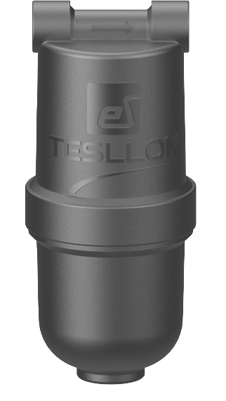
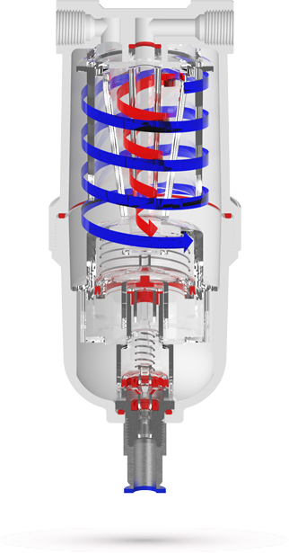
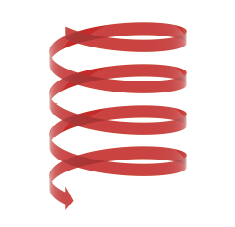
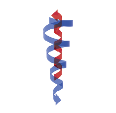
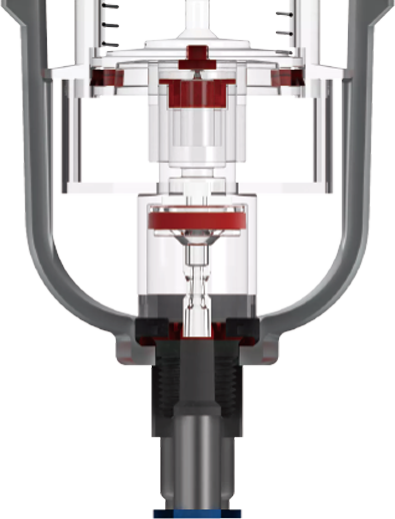
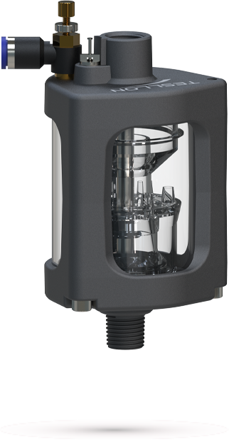

製品情報
圧縮空気用セパレーター
eSeparator iA03は、遠心力で圧縮空気中の凝縮水を分離する産業用セパレーターです。
機械、ロボット、塗装設備などの空気配管に接続します。交換式エレメントを使わず、分離した凝縮水をオートドレンで排出します。選定には使用流量、圧力、接続口径を確認します。

eSeparator iA03 メーカー仕様
- 最大処理流量
- 800 L/min
- 最高使用圧力
- 9.9 bar
- 配管接続口径
- 3/8 in (10A)
- 使用温度
- 5–60 °C
- 外形寸法
- 85 × 85 × 197 mm
関連機種には抗菌仕様のHA03、小型可搬式のAF02、測定用キットのAM02があります。選定にはラインの流量、圧力、接続口径をお知らせください。
お問い合わせ構造と外観
交換式エレメントを持たず、内部で発生させた旋回流で水分・異物を分離します。




Tandem Cyclone
直列多重サイクロンのしくみ
旋回流を段階的に重ねることで、大きな水滴から微細な粒子まで順に分離します。

STEP 1
1次サイクロン
大きな異物・水分を分離します。

STEP 2
外部サイクロン
粒子を集めながら、徐々に加速させます。

STEP 3
2次サイクロン
粒子・オイル・微細な水分を分離します。

STEP 4
内部サイクロン
最後まで回転を維持し、分離性能を高めます。
ドレン排出方式
分離した水分は本体下部から排出します。使用条件に合わせて排出方式をお選びください。



プランジャータイプは電気装置を使わず、流量の変化に応じて自動で排出します。大量の圧縮空気を連続使用するラインにはフロータータイプが適しています。
AIR FINN
手元で使える小型水分フィルター
エアガンや塗装ガンなど、エア機器の直前に取り付ける小型タイプです。
配管の末端で水分・異物を分離し、ブロー作業や塗装の仕上がりへの影響を抑えます。対応機器や接続口径はお問い合わせください。
お問い合わせ

紹介動画
しくみや性能比較を、日本語字幕付きの動画でご覧いただけます。